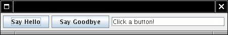
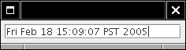
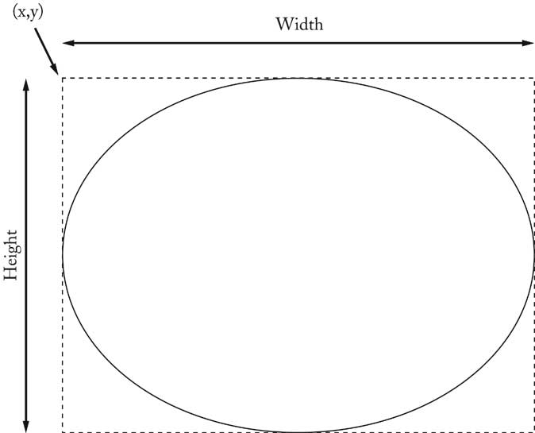
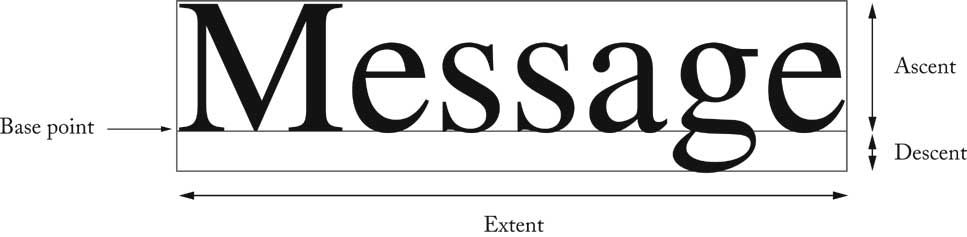
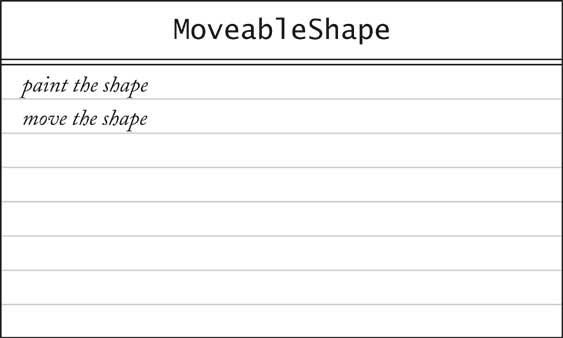

Object-Oriented Design & Patterns
Cay S. Horstmann
Chapitre 4
Les types interface et le polymorphisme

Matière du chapitre
- Afficher une image
- Polymorphisme
- Le type interface Comparable
- Le type interface Comparator
- Classes anonymes
- Cadres et composants d'interface utilisateur
- Actions dans une interface utilisateur
- Temporisateurs (timers)
- Dessiner des formes
- Concevoir un type interface
Afficher une image

Afficher une image
- Spécifier un fichier image arbitraire
JOptionPane.showMessageDialog(
null,
"Hello, World!",
"Message",
JOptionPane.INFORMATION_MESSAGE,
new ImageIcon("globe.gif"));

Afficher une image
- Et si nous ne voulons pas générer de fichier image
?
- Heureusement, nous pouvons utiliser n'importe quelle classe qui implémente le type
interface Icon
- ImageIcon est une telle classe
- C'est facile de fournir votre propre classe

Le type interface Icon
public interface Icon
{
int getIconWidth();
int getIconHeight();
void paintIcon(Component c, Graphics g, int x, int y)
}
Les types interface
- Aucune implémentation
- La classe implémentant le type interface doit implémenter toutes les méthodes
du type interface
- Ch4/icon2/MarsIcon.java
- showMessageDialog exige un objet Icon
- C'est acceptable de passer un objet MarsIcon
- Ch4/icon2/IconTester.java
Le type interface Icon et les classes qui l'implémentent

Polymorphisme
Polymorphisme
- showMessageDialog ne connaît
pas quelle icône est passée
- ImageIcon?
- MarsIcon?
- . . .?
- Le vrai type de anIcon n'est pas Icon
- Il n'y a pas d'objet de type Icon
- anIcon provient d'une classe qui implémente Icon
- Cette classe définit la méthode getIconWidth
Une variable de type interface

Polymorphisme
Bénéfices du polymorphisme
- Couplage
lâche (couplage réduit)
- showMessageDialog découplé
de ImageIcon
- il n'a pas besoin de savoir traiter les images
- Extensibilité
- Le client peut fournir de nouveaux types icône
Le type interface Comparable
Le type interface Comparable
- object1.compareTo(object2) retourne
- Une valeur négative si object1 est
plus petit que object2
- 0 s'ils sont identiques
- Une valeur positive si object1 est plus grand que object2
- La méthode sort compare et classe les éléments
if (object1.compareTo(object2) > 0) . . .
- La classe String implémente le type interface Comparable<String> : ordre lexicographique (dictionnaire)
- La classe Country : compare les pays selon leur superficie
Ch4/sort1/Country.java
Ch4/sort1/CountrySortTester.java
Le type interface Comparator
- Comment ordonner les pays par leur nom ?
- On ne peut pas implémenter Comparable deux fois !
- Le type interface Comparator donne plus de flexibilité
public interface Comparator<T>
{
int compare(T obj1, T obj2);
}
- Passer l'objet comparator à sort :
Collections.sort(list, comp);
Le type interface Comparator
Classes anonymes
- Pas besoin de nommer les objets utilisés une seule fois
Collections.sort(countries,
new CountryComparatorByName());
- Pas besoin de nommer les classes utilisées une seule fois
Comparator<Country> comp = new
Comparator<Country>()
{
public int compare(Country country1, Country country2)
{
return country1.getName().compareTo(country2.getName());
}
};
Classes anonymes
- L'expression new anonyme :
- Définit une classe anonyme qui implémente Comparator
- Définit la méthode compare pour cette classe
- Construit un objet pour cette classe
- Syntaxe énigmatique pour des caractéristiques très utiles
Classes anonymes
Cadres
Ajouter des composants

Actions et interface usager
Actions d'une interface utilisateur
- Lorsque le bouton est cliqué, le texte est établi
Accès aux variables d'une classe extérieure
- Remarquable : classe interne peut accéder
aux variables de sa classe extérieure
p.ex. textField
- Peut accéder aux variables d'instance et aux variables locales
- Les variables locales doivent être déclarés final
final JTextField textField = ...;
Actions d'une interface utilisateur
- Le constructeur attache l'abonné :
helloButton.addActionListener(listener);
- Le bouton se rappelle tous les abonnés
- Quand le bouton est cliqué, il notifie tous les abonnés
listener.actionPerformed(event);
- L'abonn établit le texte dans le champ de texte
textField.setText("Hello, World!");
Construire des actions relies
Temporisateurs
- Spécifier le délai, l'abonné pour l'action
ActionListener listener = ...;
final int DELAY = 1000; // 1000 millisec = 1 sec
Timer t = new Timer(DELAY, listener);
t.start();
- L'abonné est appelé lorsque le délai est écoulé
- Ch4/timer/TimerTester.java

Dessiner des formes
- La méthode paintIcon reçoit le contexte graphique de
type Graphics
- En fait, c'est un objet Graphics2D dans les nouvelles versions de Java
public void paintIcon(Component c, Graphics g, int x, int y)
{
Graphics2D g2 = (Graphics2D)g;
. . .
}
- Peut dessiner tout objet qui implémente l'interface Shape
Shape s = . . .;
g2.draw(s);
Dessiner des rectangles et des Ellipse
- Rectangle2D.Double construit avec
- Le coin supérieur gauche
- largeur
- hauteur
- g2.draw(new Rectangle2D.Double(x, y, width, height));
- Pour Ellipse2D.Double, spécifier
le cadre de contour
Dessiner une Ellipse

Dessiner des segments de ligne
- Point2D.Double est un point dans le plan
- Line2D.Double joint deux points
Point2D.Double start = new Point2D.Double(x1, y1);
Point2D.Double end = new Point2D.Double(x2, y2);
Shape segment = new Line2D.Double(start, end);
g2.draw(segment);
Relation entre les classes Shape

Dessiner du texte
- g2.drawString(text, x, y);
- x, y sont des coordonnées du point de base

Remplir les formes
- Remplir l'intérieur d'une forme
g2.fill(shape);
- Établir la couleur de remplissage ( paint ) ou de passe ( stroke ):
g2.setColor(Color.red);
- Programme qui dessine une voiture
Ch4/icon3/CarIcon.java

Définir un nouveau type interface
- Utiliser un temporisateur pour déplacer la forme de voiture
- Dessiner la voiture avec CarShape
- Deux responsabilités :
- Dessiner la forme
- Déplacer la forme
- Définir un nouveau type interface MoveableShape

Une carte CRC pour le type interface MoveableShape

Définir un nouveau type interface
- Nommer la méthode pour se conformer à la bibliothèque standard
- public interface MoveableShape
{
void draw(Graphics2D g2);
void translate(int dx, int dy);
}
- La classe
CarShape implémente MoveableShape
public class CarShape implements MoveableShape
{
public void translate(int dx, int dy)
{ x += dx; y += dy; }
. . .
}
Implémenter l'animation
- L'étiquette ( label ) contient
l'icône qui dessine la forme
- L'action du temporisateur déplace la forme, appelle repaint sur l'étiquette
- L'étiquette a besoin d'une Icon, nous avons MoveableShape
- Fournir la classe ShapeIcon
- ShapeIcon.paintIcon appelle MoveableShape.draw
Implémenter l'animation
Implémenter l'animation